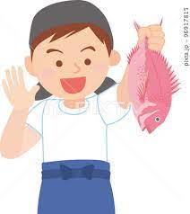
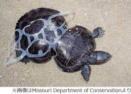

 魚釣りでは、多くの人が漁港に訪れています。 その中でも、魚の引きを楽しむ人が多くいます。 魚の引きは大きい魚だと強い引きがあります。 この写真にもあるタイはとても引きが強く、抵抗が あるので、子供だと１０分弱、かかります。 釣りでも注意してほしいことが、いくつかあります。 まず、一つ目、釣りをしたら、ゴミを持って帰ってほしいです。 なぜなら、この写真のとおり、子供のときにプラスチックに 絡まり、大人になると、形がかわり、ピーナッツ状になっています。 この、ウミガメさん、可愛そうですよね。 なので、釣りをするときなどは、ゴミを持ち帰るなり、ゴミ箱に捨てる ことを、頭の片隅に入れといてください。そうすると、１０年後 地球がきれいになり、こんな可愛そうなことがなくなりますよ。 
この３種類を試してみてくださいね とても、面白く、釣りに熱中しますよ。